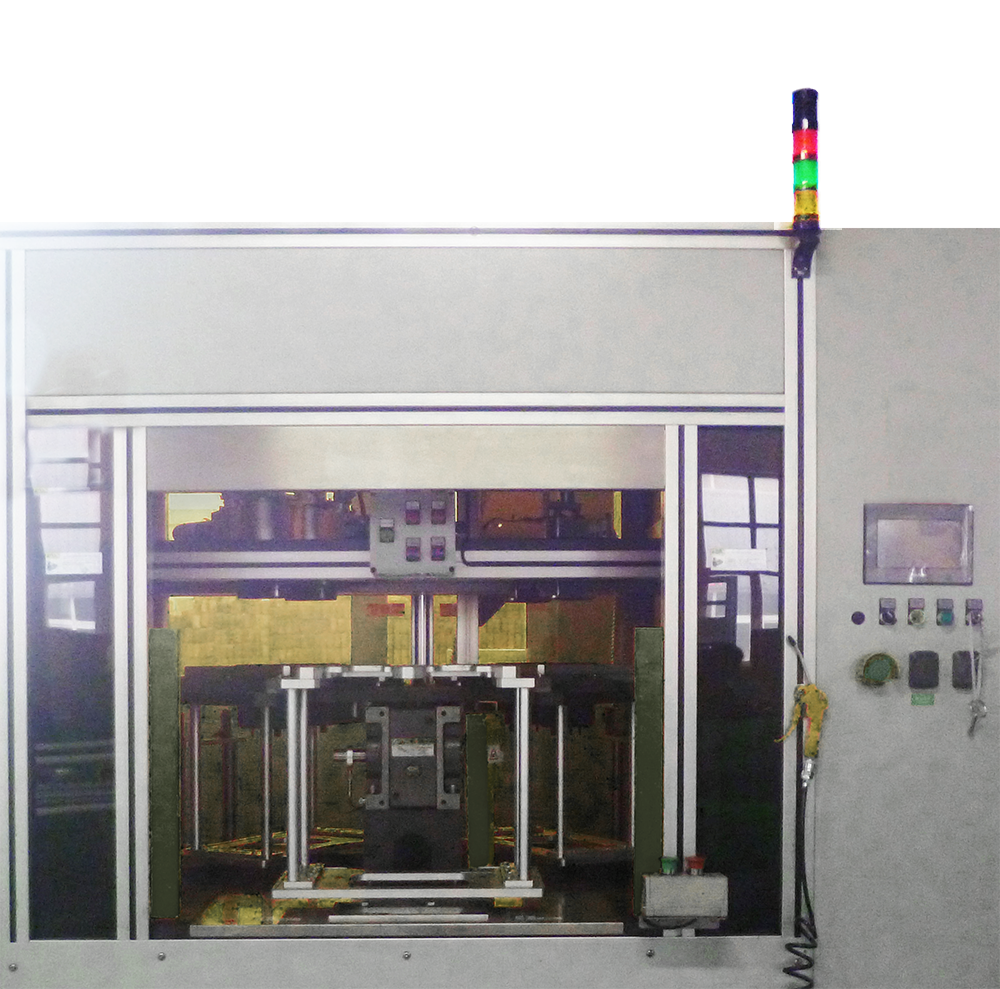
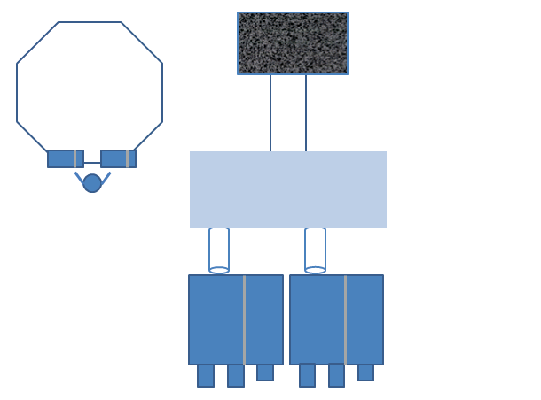

碳粉灌装机
设备图片

生产制造商
SUYUSONIC始建于2005年，总部位于上海，其自主研发生产的声波塑料焊接机热板焊接机声波精密清洗设备被广泛应用在汽车，电子元器件，食品包装等工业焊接域。
主要生产：热板焊接（气动、液压和伺服）、超声波焊接、热熔、热铆焊接（铜螺母热插、热埋）、震动摩擦焊接和旋转摩擦焊接，激光焊接，光束焊接等等。
针对汽车行业，苏豫电子引进＂汽车零配件装配技术＂，在国内进行设计和制造装配工作站、自动化装配线，如汽车门板装配线、仪表盘装配线、保险杠装配线、中控台装配线、仪表盘装配线、碳罐装配线、空滤总成装配线、进气岐管装配线、机滤装配线和车灯装配线等。
2006年，上海苏豫电子与欧洲具有影响力的超声波焊接机品牌 MECASONIC（美卡索尼） 实现强强联合；为中国区塑料焊接用户提供高精密度的塑料焊接机，并承担起在中国区（美卡索尼）售后服务中心。
原理介绍
通过抽真空的方式将碳粉吸至料筒，根据工艺要求选择不同的腔体进行进行灌装，灌装完成后，自动振碳并同时进行碳粉高度检测，最后由人工取出。

设备规格及性能
设备型号：SY-TJ3/4P
额定功率：6KW 设备性能：
额定功率：6KW 设备性能：
采用自动抽真空的方式上料，作业效率高；
采用多工位同步作业方式，一次性完成灌装、振动和检测，生产效率高，理论灌装次数最高可达1800次/天
设备稳定性较高，故障率低，维修时间短，最短可在5分钟内快速恢复生产状态
设备采用安全光栅保护，操作安全性高，事故发生率为0
设备功率低，耗能小，且灌装过程全密封，不易产生大量粉尘和有害气体等，比较清洁、环保
设备使用情况
该设备自2015年7月正式使用，已累计投入生产约9000个小时，灌装次数大约在1000,000次左右,停机故障率为0